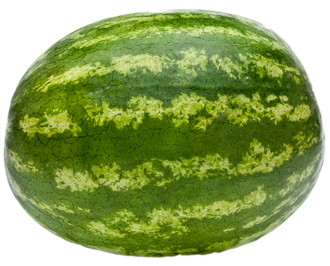
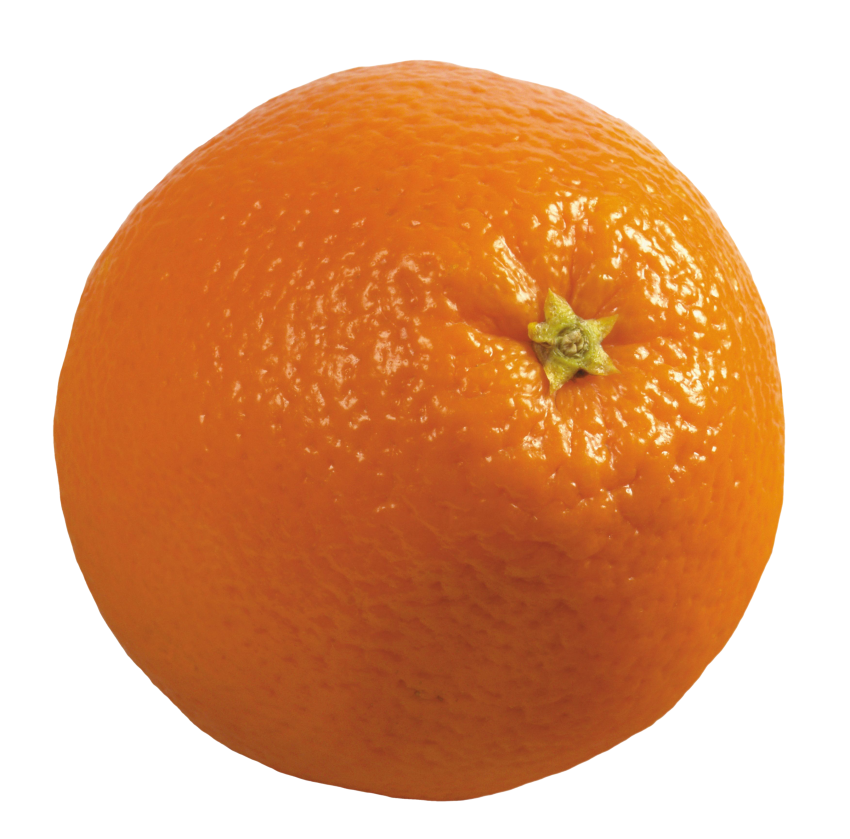
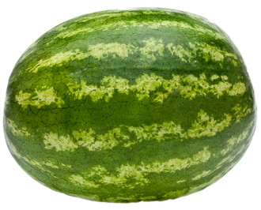
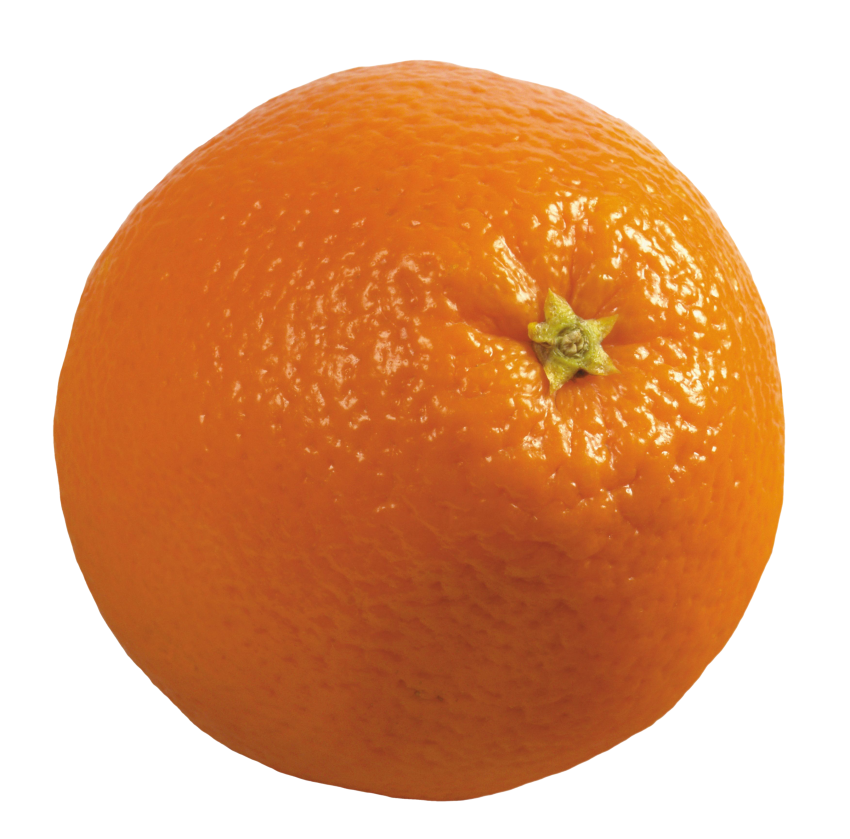
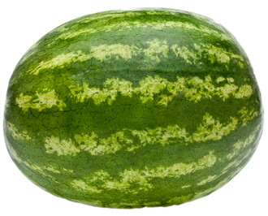
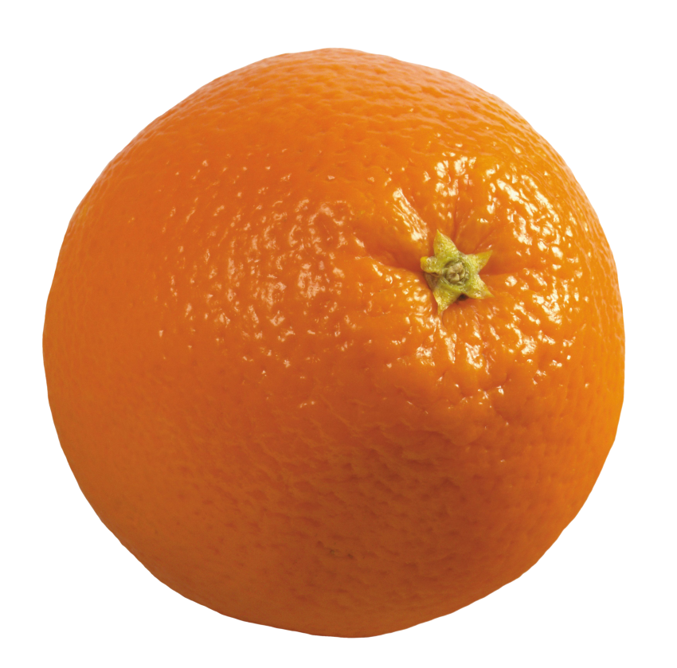

/fro͞ot/ sweet and fleshy product of a tree or other plant that contains seed and can be eaten as food.
How Are Fruits Beneficial To Your Health?
Fruits are abundant in fiber and a good source of important vitamins and minerals.
Fruits and vegetables, in general, are very low in calories and fat, which means you may eat more to feel full without worrying about extra calories or fat.
Fruits are low in salt and dangerous fats, making them heart-healthy.
Vitamin C, a potent antioxidant, is plentiful in fruits, particularly citrus fruits. They are extensively used to treat the common cold, wound healing, healthy skin, teeth, and gums, and to maintain the lymphatic system.
Fruits are high in potassium, which helps to keep your blood pressure in check.
The Fruits I personally Enjoy


Why do I enjoy these fruits? because I appreciate the way they taste when I eat them, and also because they are all nutritious and beneficial to the typical person.
 


